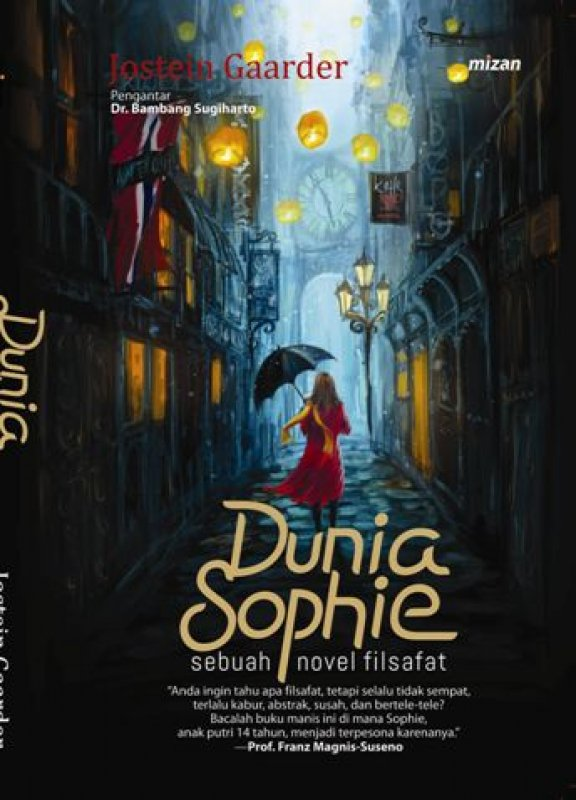
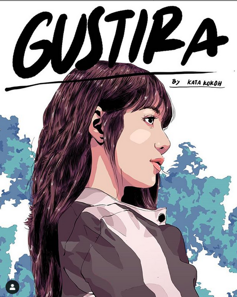

Cari & Baca buku favoritmu dengan mudah
Mulailah perjalanan literasi yang belum pernah ada sebelumnya dengan aplikasi perpustakaan revolusioner kami! Memperkenalkan pengalaman tanpa batas yang sangat meningkatkan penemuan buku, di mana Anda dapat dengan mudah mencari dan meminjam buku-buku favorit Anda.


